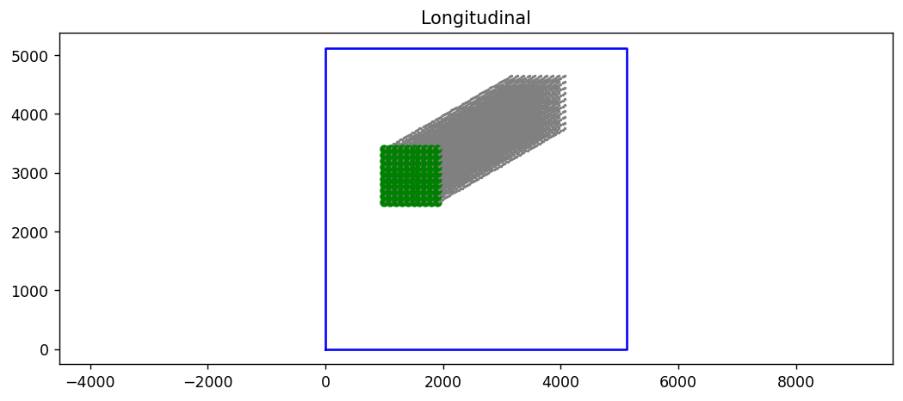
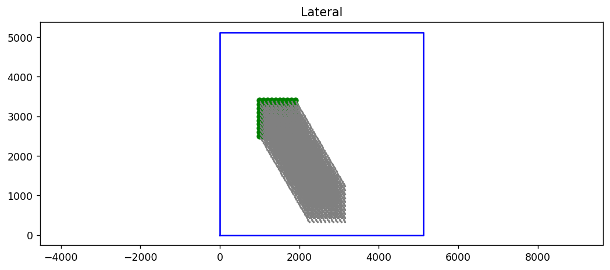
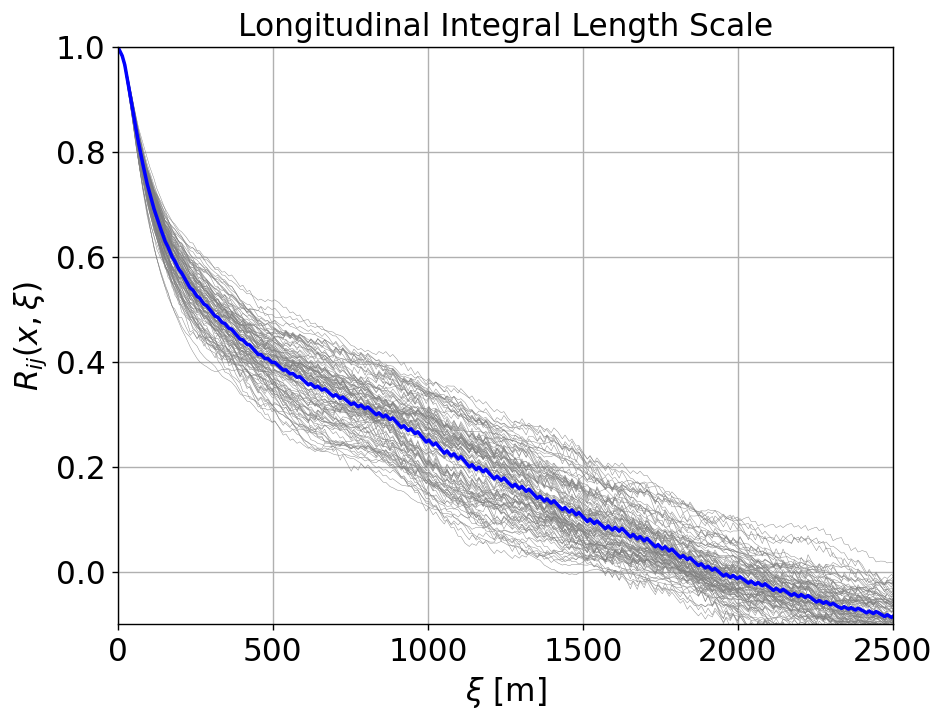
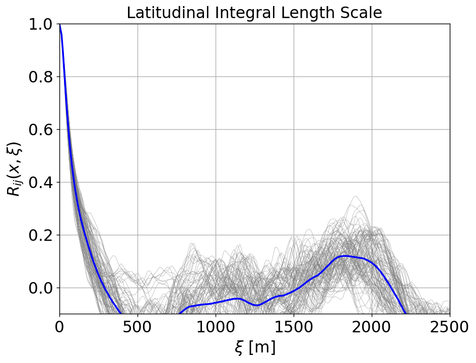

Compute correlations and integral lengthscale
Definition
The two point correlation \(R_{ij}\) is defined as $\( R_{ij}({\mathbf x},\boldsymbol{\xi}) = \frac{\langle {u'_i(\mathbf{x}, t) u'_j(\mathbf{x}+\boldsymbol{\xi},t)} \rangle} { \sqrt{\langle u'^2_i \rangle} \sqrt{\langle u'^2_j \rangle}} \)$
The fluctuations $\( u'_i(\mathbf{x},t) = u_i(\mathbf{x},t) - \langle u_i(\mathbf{x},t) \rangle \)$
The lengthscale is calculated as $\( L = \int_0^\infty R_{ij}(\xi)\: {\textrm d}\xi \)$
See https://spiral.imperial.ac.uk/bitstream/10044/1/41599/4/Airflow_v16a_Revised25_final_deposit.pdf as a reference
# Add any possible locations of amr-wind-frontend here
amrwindfedirs = ['/projects/wind_uq/lcheung/amrwind-frontend/',
'/ccs/proj/cfd162/lcheung/amrwind-frontend/']
import sys, os, shutil
for x in amrwindfedirs: sys.path.insert(1, x)
for x in amrwindfedirs: sys.path.insert(1, x+'/utilities')
import postproamrwindsample_xarray as ppsamplexr
import correlate as corr
import numpy as np
import matplotlib.pyplot as plt
amrdir = '/gpfs/lcheung/HFM/exawind-benchmarks/convective_abl/post_processing/'
ncfile = 'XYdomain_090_30000.nc' # netcdf filename
timerange=[15000, 20000]
iplane=0
group='Farm_XYdomain090'
avgdat, headers = corr.avgNCplaneXR(amrdir+'/'+ncfile, timerange, group, iplane, verbose=True)
/gpfs/lcheung/HFM/exawind-benchmarks/convective_abl/post_processing//XYdomain_090_30000.nc 10001
[============================================================] 100.0%
Ncount = 10001
corr.getsizesindices(avgdat, headers)
(513, 513, 1, [6, 7, 8])
iplane2=0
ij = [0,0]
ws, winddir = corr.getavgwind(avgdat, headers, iplane2)
print('WS = '+repr(ws))
print('Wdir = '+repr(winddir))
WS = [9.872843179511582, 5.69942735729509, -1.0873868051805409e-06]
Wdir = 240.00287845460377
# Create the probe list for LONGITUDINAL
# Set parameters
#winddir= 240
#winddir= 270
if (winddir>270): s=-1
else: s=+1
ds = 10
startx = np.arange(100,200,ds)
starty = np.arange(250,350,ds)[::s]
probelength = 2500 # Probe length should be a few hundred meters
startp = []
yoffset=0
[[startp.append([x,y+yoffset*iy,iplane2]) for x in startx] for iy, y in enumerate(starty)]
plistLONG = corr.makeprobeline(startp, winddir, probelength, avgdat)
Nlong = len(plistLONG)
print("Len(plist)=%i"%Nlong)
Len(plist)=100
# Create the probe list for LATERAL
# Set parameters
#winddir= 150
#winddir = 180
if ((winddir+90)>270): s=-1
else: s=+1
#ds = 10
#startx = np.arange(200,300,ds)
#starty = np.arange(100,200,ds)[::s]
#probelength = 4000 # Probe length should may be 0.5*domain length
startp = []
yoffset=0
[[startp.append([x,y+yoffset*iy,iplane2]) for x in startx] for iy, y in enumerate(starty)]
plistLAT = corr.makeprobeline(startp, (winddir+90), probelength, avgdat)
Nlat = len(plistLAT)
print("Len(plist)=%i"%Nlat)
Len(plist)=100
plotprobept = True
# Plot the probe points
if plotprobept:
#avgdat, headers = corr.loadavg(ncfilename, loadfromplanes, avgsavefile, verbose=True)
# LONG
plt.figure(figsize=(10,4), dpi=125)
#plt.rc('font', size=14)
corr.plotprobes(plistLONG, avgdat, headers, verbose=False, skip=3)
plt.title('Longitudinal')
plt.axis('equal')
# LAT
plt.figure(figsize=(10,4), dpi=125)
#plt.rc('font', size=14)
corr.plotprobes(plistLAT, avgdat, headers, verbose=False, skip=3)
plt.title('Lateral')
plt.axis('equal')


plist = plistLONG + plistLAT
allf, allRij = corr.makeRij(ij, plist, [], True, None, iplane, group,
avgdat = avgdat, headers=headers, timerange=timerange, ncfilename=amrdir+'/'+ncfile, verbose=True, skip=10)
[============================================================] 100.0%
# Split it back into LONG/LAT
avgRijLong = np.mean(allRij[:Nlong], axis=0)
avgRijLat = np.mean(allRij[Nlong:], axis=0)
print(allRij.shape)
(200, 218)
# Plot the LONG Rij
plt.figure(figsize=(8,6), dpi=125)
#plt.rc('font', size=14)
for ir, Rij in enumerate(allRij[:Nlong]):
plt.plot(allf[Nlong], Rij, 'gray', lw=0.25)
# Average
fsize=18
plt.plot(allf[Nlong], avgRijLong, 'b', lw=2)
plt.ylim([-0.1, 1])
plt.xlim([0, probelength])
plt.grid()
plt.xlabel(r'$\xi$ [m]',fontsize=fsize)
plt.title("Longitudinal Integral Length Scale",fontsize=fsize)
plt.ylabel(r'$R_{ij}(x,\xi)$',fontsize=fsize)
plt.tick_params(axis='both', which='major', labelsize=fsize) # Major ticks
plt.tick_params(axis='both', which='minor', labelsize=fsize) # Minor ticks (if any)
plt.savefig('./figures/ABL_integral_lengthscale_long.png')

# Plot the LAT Rij
plt.figure(figsize=(8,6), dpi=125)
#plt.rc('font', size=14)
fsize = 18
for ir, Rij in enumerate(allRij[Nlong:]):
plt.plot(allf[Nlong], Rij, 'gray', lw=0.25)
# Average
plt.plot(allf[Nlong], avgRijLat, 'b', lw=2)
plt.ylim([-0.1, 1])
plt.xlim([0, probelength])
plt.grid()
plt.xlabel(r'$\xi$ [m]',fontsize=fsize)
plt.title("Latitudinal Integral Length Scale",fontsize=fsize)
plt.ylabel(r'$R_{ij}(x,\xi)$',fontsize=fsize)
plt.tick_params(axis='both', which='major', labelsize=fsize) # Major ticks
plt.tick_params(axis='both', which='minor', labelsize=fsize) # Minor ticks (if any)
plt.savefig('./figures/ABL_integral_lengthscale_lat.png')

# Calculate lengthscale
lengthscale = corr.calclengthscale(allf[0], avgRijLong-0.0,max=2000)
print('LONG lengthscale = %f'%lengthscale)
lengthscale = corr.calclengthscale(allf[Nlong], avgRijLat)
print('LAT lengthscale = %f'%lengthscale)
LONG lengthscale = 539.607349
LAT lengthscale = 97.135780